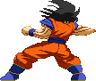
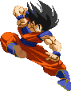

Flik Flak
After doing the backdash hop, holding Back will make
Goku repeatedly doing reverse handsprings until you let go. These handsprings
don't have any invurnerability so beware, you're wide open to incoming projectiles!


Backdash Attack
A trait unique to Goku (and SSJ Goku),
he can perform one of his jumping attacks while backdashing.
More useful than you think! You can catch someone as they run after you.


standing medium punch chain
Standing combo extender.


Uppercut (Launches)
Main launcher tool. After hitting the opponent with it, press Up
to pursue them and set yourself up to perform an aircombo.


Boomerang Kick (bounce-juggles)
Main tool for smashing opponents down to the ground during an aircombo. If an aerial opponent is hit by this move, they'll
fly to the ground and bounce up upon impact, allowing for a juggle combo. A version of this is also available as one of the follow-up options of his Hurricane Kick.
Turn Boomerang Kick (bounce-juggles)
Works identical to the regular version, feature-wise.
This reverse version is useful when superjumping over an unsuspecting opponent and striking them on the head from behind with it.

Cartwheel Kick
Double hitting overhead attack, since it's a running attack it chains off the Focus Attack. Chains into Dragon Fist and Hurricane Kick.


Ki Blast
Excellent zoning tool. Goku fires a basic Ki Blast. The speed the blast travels at is determined by the strength of
the button input: Weak version travels slowly, while Strong version travels fast. Medium as usual is somewhere inbetween.
You're able to shoot out three of these Ki Blasts consecutively by repeating the command twice after doing it once. You can mix up the Weak and Strong versions.
Has no EX version. Supercancelable.


Dragon Fist
Main combo tool for Goku. An overhead punch that slightly stuns the enemy. It's the starter of the Dragon Combo attack.
The Weak version has the most forward range, while the Strong version has the least. The EX version performs three punches in a row.
On its own this attack isn't very good; it's the possible follow-ups that you want;
-Dragon Elbow - QCB+P - An elbow to the mid-section.
-Snap Kick - QCB+K - A spin kick which knocks the opponent away.
-Flash Kick (EX move) - QCB+2K - An unblockable flip kick.
-Dragon Elbow - QCB+P - An elbow to the mid-section.
-Snap Kick - QCB+K - A spin kick which knocks the opponent away.
-Flash Kick (EX move) - QCB+2K - An unblockable flip kick.

Dragon Elbow
Stunning attack but unable to follow up or chain into with anything due to the long recovery time.
But the move has its own follow-up attacks which you can resort to;
-Dragon Upper - QCB+P - An uppercut that knocks the opponent into the air.
-Snap Kick - QCB+K - A spin kick which knocks the opponent away.
-Flash Kick (EX move) - QCB+2K - An unblockable flip kick.
-Dragon Upper - QCB+P - An uppercut that knocks the opponent into the air.
-Snap Kick - QCB+K - A spin kick which knocks the opponent away.
-Flash Kick (EX move) - QCB+2K - An unblockable flip kick.
Dragon Upper
A jumping uppercut, this brings both Goku and the opponent into the air.
You can't start an air combo, but you can supercancel into his aerial Kamehameha or Bicycle Kick.
Besides that, there is the best option from his Dragon Combo available as a follow-up;
-Dragon Kick - QCB+K or 2K - An aerial overhead kick, detailed below.
-Dragon Kick - QCB+K or 2K - An aerial overhead kick, detailed below.
Dragon Kick (EX version bounce-juggles)
The best move out of the Dragon Combo attack and the one you should always try to aim for.
It's an overhead kick that knocks the enemy down. It's the EX version that you really need to go for,
as only that version causes a ground-bounce, setting up the opponent for a juggle oppertunity.

Hurricane Kick
It's Goku's 'spin' on the Hurricane Kick. Great move to use in combos.
He jumps up and forward at an arc, the distance depending on which button was pressed to activate it with.
The Weak version deals two hits and doesn't knock the opponent away. The Medium and Strong version do knock the opponent into the air after the first hit, turning it into a juggling move.
The Ex version becomes the Super Hurricane Kick, where Goku leaps through an even larger arc and dealing a lot of hits.
All versions have two possible follow-ups (Except the EX version which can only do the first of these two);
-Blur Kick - QCF+K. Upon landing, Goku busts out his standing strong kick, knocking the opponent away. The command can be inputted at any time but the Blur Kick will only come out upon landing.
-Boomerang Kick - QCB+K. This needs to be inputted during the flying part. Goku performs his jumping strong kick, which smashes the opponent down and causes a bounce-juggle when hitting an aerial opponent. Also, discovered by fans, performing the Boomerang Kick at the last moment (just before landing) allows you to land and instantly perform another Hurricane Kick, which can leads to some real wicked combos.
The aerial version doesn't arc upward, but forward. The stronger the button input, the more forward range Goku will gain. Excellent way to finish off an aircombo with, especially with the Boomerang Kick option. As with all these type of moves, the bounce-juggle feature will only be triggered once during the same combo to prevent infinites.
-Blur Kick - QCF+K. Upon landing, Goku busts out his standing strong kick, knocking the opponent away. The command can be inputted at any time but the Blur Kick will only come out upon landing.
-Boomerang Kick - QCB+K. This needs to be inputted during the flying part. Goku performs his jumping strong kick, which smashes the opponent down and causes a bounce-juggle when hitting an aerial opponent. Also, discovered by fans, performing the Boomerang Kick at the last moment (just before landing) allows you to land and instantly perform another Hurricane Kick, which can leads to some real wicked combos.
The aerial version doesn't arc upward, but forward. The stronger the button input, the more forward range Goku will gain. Excellent way to finish off an aircombo with, especially with the Boomerang Kick option. As with all these type of moves, the bounce-juggle feature will only be triggered once during the same combo to prevent infinites.

Slash-down Kick
Goku's dive kick, a must-have special move featured in most of the older games.
Upon hitting the opponent, you can choose to land and then start a basic combo string, or supercancel into his
aerial Kamehameha or Bicycle Kick. Weak version has a steep arc, while the Strong version has a wider angle and thus covering the most range.
The EX version has the Strong version's arc and hits three times instead of once. When the EX version is blocked, Goku rebounds backwards a bit.